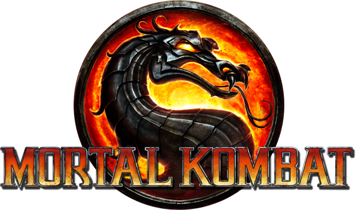
El mejor título de la saga según muchos | 2011 - 2025: legado eterno
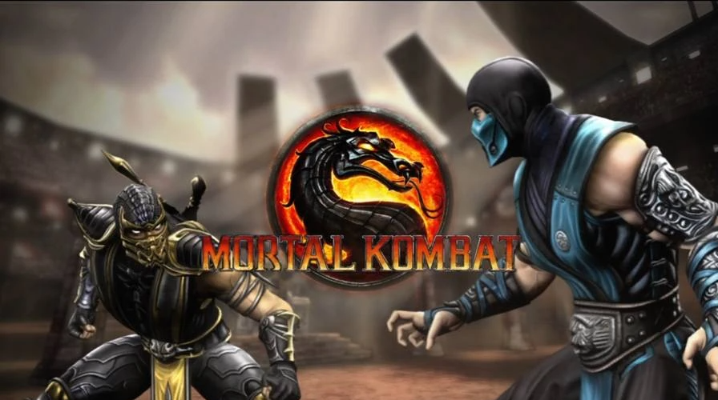
La historia comienza cuando Raiden, el dios del trueno y protector de la Tierra (Earthrealm), recibe una visión aterradora del futuro: Shao Kahn, emperador de Outworld, conquista la Tierra y destruye todo. Para evitar ese destino, Raiden decide cambiar el curso de los eventos enviando mensajes a su yo del pasado durante el torneo de Mortal Kombat.
Durante siglos, Outworld ha estado conquistando reinos. Según las reglas de los Antiguos, un reino solo puede ser invadido si gana 10 torneos de Mortal Kombat consecutivos. La Tierra (Earthrealm) ha ganado los últimos 9 torneos (gracias especialmente a Liu Kang). El décimo torneo es decisivo. Shao Kahn, cansado de esperar, quiere a la tierra en su poder, impaciente saber si Shang Tsung traerá las buenas noticias.
Mientras tanto, Scorpion busca venganza contra Sub-Zero (Bi-han) por la muerte de su clan y familia. Sub-Zero (Kuai Liang) también entra en la historia buscando justicia. Johnny Cage, Sonya Blade y Jax representan a las fuerzas especiales de la Tierra. Raiden y Liu Kang son los grandes héroes de la Tierra.
Sin spoilers mayores: La historia tiene un giro muy importante hacia el final que reinicia la línea temporal de la saga y prepara todo lo que vendrá después (Mortal Kombat X y 11).
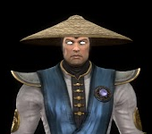
He must win...
Protagonista central. Es el que impulsa toda la historia con sus visiones del futuro.
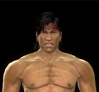
For Kung Lao, the Shaolin, and Earthrealm!
El campeón de Earthrealm, tiene varios momentos clave y es el héroe tradicional.
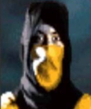
No... To hell with YOU!
Tiene uno de los arcos más fuertes y emocionales del juego (Aunque luego pierde importancia totalmente).
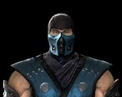
We share blood, but we are not brothers
Arco muy importante, especialmente en la segunda mitad pues se vuelve de gran ayuda.
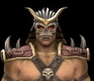
I am Shao Kahn, Conqueror of Worlds!
El villano principal, el motor de la invasión.
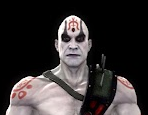
The Elder Gods are toothless. Your world is near destruction, yet they do not act
Manipulador clave, aparece constantemente moviendo hilos.
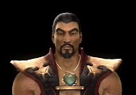
Your soul is mine!
Anfitrión del torneo y muy relevante en la primera mitad.
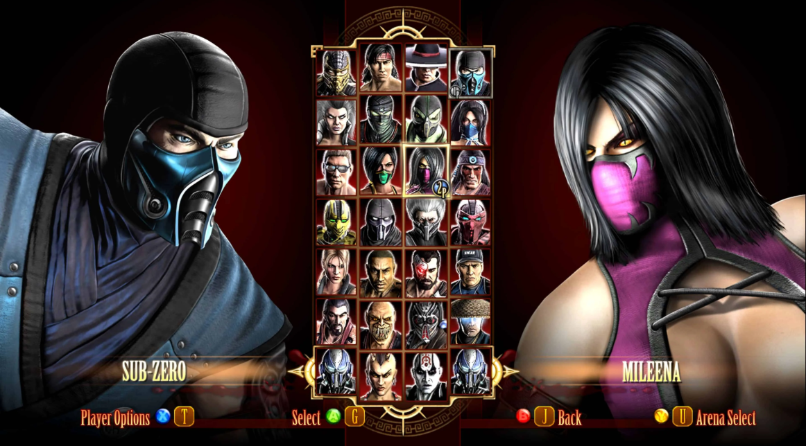
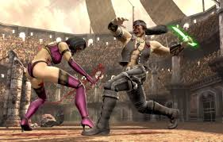
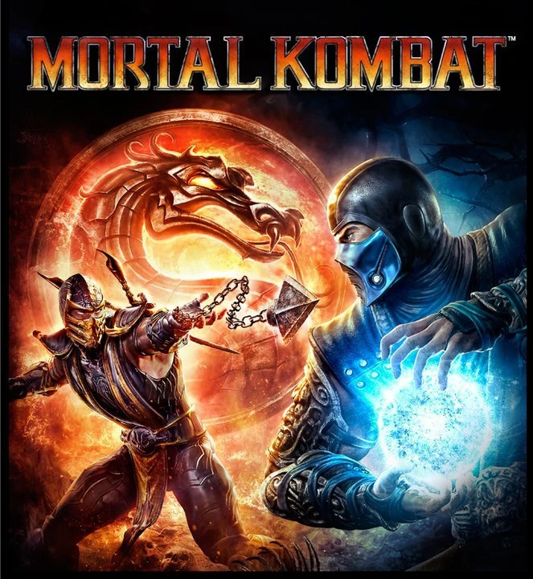
| Icono | Personaje | Alineación | Descripción breve |
|---|---|---|---|
| Raiden | Earthrealm | Dios del trueno, protector de la Tierra. | |
| Liu Kang | Earthrealm | Campeón de la Tierra, héroe tradicional. | |
| Kung Lao | Earthrealm | Guerrero shaolin, amigo de Liu Kang. | |
| Johnny Cage | Earthrealm | Estrella de cine que lucha por demostrar su valía. | |
| Sonya Blade | Earthrealm | Teniente de las Fuerzas Especiales. | |
| Jax Briggs | Earthrealm | Oficial de las Fuerzas Especiales. | |
| Stryker | Earthrealm | Policía de la ciudad, defensor civil. | |
| Nightwolf | Earthrealm | Chamán nativo americano. | |
| Scorpion | Neutral (vengativo) | Espectro del infierno, busca venganza. | |
| Sub-Zero (Kuai Liang) | Earthrealm | Gran maestro del Lin Kuei, poder de hielo. | |
| Smoke (Humano) | Earthrealm | Amigo de Sub-Zero, escapó de la cibernética. | |
| Cyber Sub-Zero | Lin Kuei | Versión cibernética de Sub-Zero. | |
| Cyrax | Lin Kuei | Ninja cibernético en busca de redención. | |
| Sektor | Lin Kuei | Ninja cibernético leal al clan, sin piedad. | |
| Noob Saibot | Netherrealm | Espectro oscuro, hermano mayor de Sub-Zero. | |
| Kitana | Earthrealm (Edenia) | Princesa guerrera, hija adoptiva de Shao Kahn. | |
| Mileena | Outworld | Clon deforme de Kitana, leal a Shao Kahn. | |
| Jade | Earthrealm | Amiga y guardaespaldas de Kitana. | |
| Sindel | Edenia | Reina de Edenia, madre de Kitana. | |
| Ermac | Criatura de Shang Tsung | Ser formado por almas, leal a Shao Kahn. | |
| Reptile | Outworld | Último de su raza, sirviente de Shao Kahn. | |
| Baraka | Outworld | Líder de los tarkatanos, salvaje y leal. | |
| Sheeva | Outworld | Guerrera shokan, guardaespaldas de Sindel. | |
| Kabal | Mercenario | Antiguo Black Dragon, busca redención. | |
| Kano | Black Dragon | Líder del clan Black Dragon, mercenario. | |
| Shang Tsung | Outworld | Hechicero organizador del torneo. | |
| Quan Chi | Netherrealm | Hechicero manipulador, aliado de Shao Kahn. | |
| Kenshi (DLC) | Earthrealm | Guerrero ciego con telequinesis. | |
| Skarlet (DLC) | Outworld | Asesina creada por Shang Tsung. | |
| Rain (DLC) | Outworld | Príncipe edeniano, maestro del agua. | |
| Kratos (Exclusivo PS3) | Invitado (God of War) | Fantasma de Esparta. Solo en PlayStation 3. | |
| Freddy Krueger (Invitado DLC) | Pesadilla | Asesino de sueños. Su licencia expiró, por eso MK9 ya no se vende. |
Mortal Kombat 9, Komplete edition, 2011, o por como te guste referirte a él es sin duda, uno de los mejores juegos de lucha que he probado desde que tengo memoria, algunos titulos incluso rozando lo malo como el MK:Armageddon, y mira que el titulo antes mencionado lo he jugado bastante en mi niñez, pero de todas formas soy totalmente sincero y no es nostalgía ciega el decir esto del MK9, es en definitiva mi favorito y le guardo un enorme cariño ya que en una antigua Ps3 que tenía logré sacarme casi todos los logros a excepción de uno, que mas que por dificultad simplemente era por lo tedioso de conseguirlo, pero bueno, prosiguiendo, la jugabilidad es fluida, los fatalities son espectaculares tanto para la época como para hoy en dia, y el modo historia es una carta de amor a los fans de la saga aunque personalmente es imposible no notar los problemas, conveniencias y agujeros de guión en ella, y por mas ridículo que suene es la mejor historia de MK hasta la fecha. Reiniciar la línea temporal permitió revivir los momentos clásicos con gráficos actualizados y una narrativa más profunda para por lo menos mis estandares (que no son muy altos). La dificultad está bien balanceada y el elenco de personajes es variado aunque siempre habrá alguno mas roto que otro (como Cyrax o Kabal). Personalmente, lo considero un juego que todo amante de la saga y cualquiera que le gusten los titulos de peleas debería jugar al menos una vez. Su legado perdura hasta hoy, y la comunidad sigue recordando con cariño el "MK9". ¡Altamente recomendado!
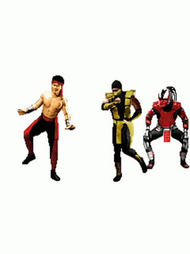